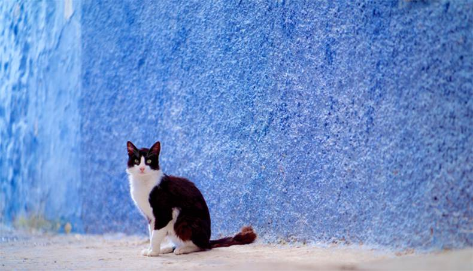
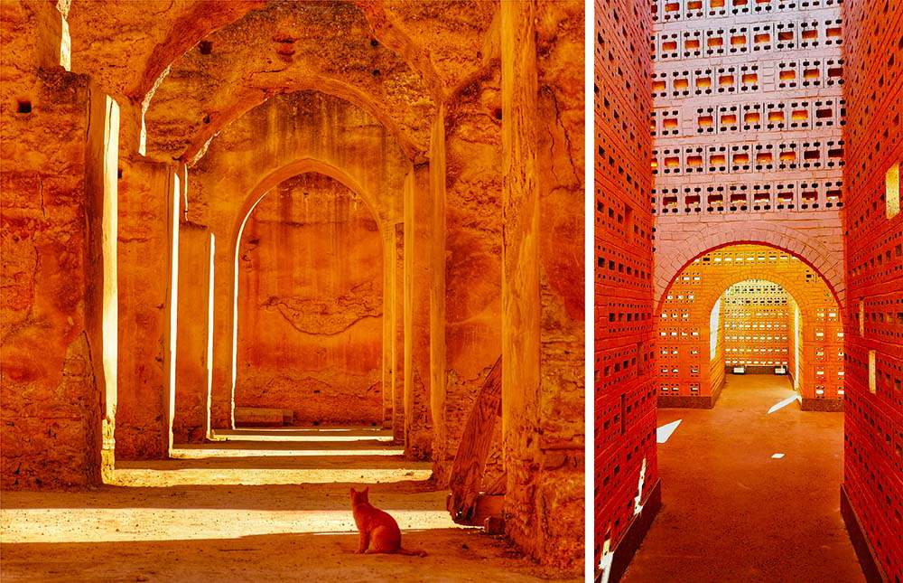

穿搭达人 | 旅游达人 | 美食博主

穿搭达人 | 旅游达人 | 美食博主
我是有多么喜欢摩洛哥啊!看到你的提问就想提笔娓娓道来，在回复中让我重游摩洛哥！
上周我们一家刚从摩洛哥旅游回来，我精简的分享下亲身经历，如果能抽出5分钟耐心看完我这篇文章，一定会让你去摩洛哥旅游少走弯路!
我也是带父母一起去的摩洛哥，完成了期待已久的摩洛哥之行。
一、我选的出游方式是自由行
考虑到父母的身体，不太适合走太赶的旅游团，我们一家人选择了包车自由行，对比了下跟团游的费用，没什么太大的价格差距，我们果断选择包车，方便我们出行。
这里，我是从去过的朋友那，要了一个常驻摩洛哥的华人地接小张，请他帮我安排摩洛哥的酒店和用车服务，定制了摩洛哥的全部行程，小张的服务，无可挑剔，从接机开始，非常热情的跑前跑后为我们张罗，有时连饭都没吃上，至今想到还是很感动，在这里给小张32个赞，同时替他打个小广告，如果你有需要，请加小张的微信：MoroccoTrip [长按即可复制，转到微信加好友]，他可以免费帮你解答很多出行摩洛哥的疑问，也可以为你量身定制一款，合适的行程。
总结：当时选择包车出行，绝对的明智之选，没有各种限制，可以更好的融入到当地生活，全方位了解本地人的文化，深入体验异国风情，这样的旅行才是我们一直想要的，所以建议大家去摩洛哥旅游，尽量选择自由行。
小张帮我们拍的沙漠合照
避坑提醒一：
1、出机场拉客的很多，小心上当受骗。
2、有的酒店前台服务员也在拉客，小心被骗。

二、关于摩洛哥旅游签证
摩洛哥对大部分国家实行免签或者落地签，办理签证没什么障碍。
三、关于摩洛哥旅游入境防疫政策要求
摩洛哥入境，需要一个当地的酒店订单，无需提供任何核酸检测报告和疫苗接种等证明。
当然，摩洛哥当地防疫政策随时有变化，详细的政策建议最好询问下在当地的小张，政策信息比较准确，避免给自己入境带来麻烦。
四、我为什么选择去摩洛哥，爱上它的理由
摩洛哥是个色彩丰富的国度，有“北非花园”的美誉，这里的每个主要城市，就像一个五彩斑斓的魔方，每座城市都有标志性色彩：白色的卡萨布兰卡、红色的马拉喀什、黄色的菲斯、蓝色的舍夫沙万，交融一起让摩洛哥成为拍片圣地，号称北非的好莱坞，N多大片都曾在此取景，《碟中碟5》、《北非谍影》、《权利的游戏》等经典杰作在此留下的足迹。
不是欧洲却近似欧洲,身处非洲却不像非洲;是阿拉伯国家，又有别于其他阿拉伯国家。
地理位置独特，若站在直布罗陀，左手边是大西洋，右手边是地中海;一半是海水，一半是沙漠，一半是古老，一半是神秘。
这里，诞生了奇妙的《一千零一夜》,弥漫着三毛和荷西唯美的爱情故事，三毛曾说过：每想你一次，天上将飘落一粒沙，从此形成了撒哈拉。
这么撩人的国度，不去一下太遗憾了!
五、摩洛哥旅游线路规划
我对摩洛哥的旅游定义为体验式和享受性旅游，它的景点分布适合走环线，全程不走往返路，这也是它的亮点，全程适合乘坐舒适性商务车出行，合理的出游时间最好为12天。
小张为我们安排的是，摩洛哥全景环线12日游：卡萨布兰卡+马拉喀什+瓦尔扎扎特+梅尔祖卡+撒哈拉沙漠+菲斯+舍夫沙万+丹吉尔+拉巴特，如下：
第1-2天:卡萨布兰卡
抵达时髦的商业之都卡萨布兰卡后，先去看看壮观的哈桑二世清真寺。吃完午餐之后入住酒店，在老城区漫步，在市中心一边闲逛一边欣赏建筑。晚上可以去Rick’s Cafe就餐，向经典电影致敬。卡萨布兰卡虽然不像摩洛哥的其他城市那样氛围独特，却是这个现代国度的代表。
第3-4天:马拉喀什
第3天来到喧闹的马拉喀什，在活色生香的德吉玛广场感受日落氛围，欣赏圣罗兰梦幻的非洲花园。花2天时间看看这座城市的市集、街头表演者和王室建筑构成的令人迷醉的混搭风景。在摩洛哥，说到传统与现代的融合，恐怕再也没有马拉喀什做得更好的地方了。马拉喀什是耀眼的，也是破旧的，但它始终具有一种吸引人的魔力。

第5天:瓦尔扎扎特
第5天翻过雄伟的阿特拉斯山脉，到达瓦尔扎扎特，经过素有“非洲好莱坞”之称阿伊特本哈杜，去看看带有童话色彩的11世纪古堡。20世纪50年代法国人离开后，瓦尔扎扎特的电影业逐渐繁荣起来，修建了大批逼真的异国风情电影拍摄基地。
第6天:梅尔祖卡沙漠
第6天前往梅尔祖卡，这是摩洛哥通往撒哈拉的门户。然后骑着骆驼前往鬼斧神工的撒哈拉沙漠，在星空下入眠。不防计划一下日落时骑骆驼、参加篝火旁的音乐会以及欣赏漫天繁星的夜晚，然后在第二天清晨爬上附近的沙丘欣赏日出。
第7-8天:菲斯
第7天前往洋溢着贵族气息的非斯，花2天时间逛逛古老而繁华的老城。跟着你的鼻子或者耳朵，随机去探索和发现老城意想不到的美丽。这里的方向令人困惑，迷路是肯定的，不防将其视为冒险的一部分吧！给你一个提示：主路永远通向大门或地标，跟着人群走就可以了。
第9天:舍夫沙万
第9天到达里夫山区的舍夫沙万，这里的老城呈现给世人的是华丽的淡蓝色。舍夫沙万老城街道陡峭，铺设了鹅卵石，红色屋顶、锻铁阳台和天竺葵沿着山腰向下泼洒。碧蓝的巷道如有魔力，让这座城镇成为摄影师实现梦想的地方。
第10天:丹吉尔
第10天前往以颓废而闻名的名称丹吉尔，逛逛这里具有欧洲风情的老城。丹吉尔一直有种不太正派的诱惑力，部分原因是这里曾是个半独立的国际共管区，引来了古怪的外国人、艺术家和密探。透过丹吉尔崭新又现代的面貌，寻找曾在此安家的艺术家的影踪。
第11天:拉巴特
第11天前往随处可见殖民建筑和棕榈树大道的拉巴特。逛完富有魅力的拉巴特老城后，可在市集选购几件纪念品。
第12天:行程圆满结束，离开摩洛哥

避坑提醒二：
1、财产安全
摩洛哥是阿拉伯家中比较安全的目的地，来到摩洛哥需要注意的与其他旅游国家无异，看好随身携带的背包和电子设备；不要携带大量现金和首饰在身上，现金分开放置；酒店的行李箱在出门前上锁；不要去偏僻的地方，尤其是在天黑以后；如果一个女孩子单独旅行，只要自己提高警惕，穿着不暴露，总体环境还是很安全的。如果遇到轻佻搭讪，置之不理即可。
2、风俗禁忌
伊斯兰教在摩洛哥影响深远，教规众多。在旅游时一定要注意了解当地风俗和尊重穆斯林的宗教习惯。
穆斯林都认为“右比左好”，右是吉祥的，做事要从右手和右脚开始，握手、用餐、递送东西必须用右手。所以当与当地人交往时一定要要用右手握手、接东西，用左手与他握手或递东西是极不礼貌的，甚至被视为污辱性的。
男士不要主动和当地妇女攀谈，不要夸女孩身材苗条，未经允许不得给女性拍照。不要随便和当地人谈论宗教纠纷，中东政局及男女关系。不要称道对方的东西，否则会认为你在向他索要。穆斯林是禁酒禁食猪肉的，与当地人聊天时也不要提及“猪”这个词。
3、着装之道
在摩洛哥，女性无须遮住头发。是否戴头巾是摩洛哥女性的自由选择。周围环境很重要，在马拉喀什餐厅里，你能看到摩洛哥妇女身着齐膝短裙；但在老城里，很可能就只能看到她们身穿更为保守的连帽宽袍了。也就是说，你的穿着打扮可以被视为对自己和摩洛哥人的尊敬。对男人和女人而言，这意味着不要穿短裤、无袖上衣或者紧身衣物。
4、交通
摩洛哥车辆靠右行驶，与中国大陆相同。过马路时必须先停、看、听，以免发生意外。道路指示牌只会以法语或者阿拉伯语标示，如自驾需要一点外语基础。摩洛哥大部分道路路况不错，乡村道路比较狭窄，请注意车距。夜间行车需留意轻便摩托车、自行车和动物。摩洛哥的单行车道以白线标示，双行车道以黄线标示。
5、卫生医疗
摩洛哥医疗条件较落后、总体医疗水平不高、且发展极不平衡。请在出行时携带好一些常规药品。
常备药品清单：抗生素、抗菌免洗洗手液、止泻药、阿司匹林、抗炎药、抗组胺药、抗菌软膏、防虫喷雾、防晒霜等
此次摩洛哥之行，必须感谢小张，为我们提供了很大的帮助,细心热情的服务，让全程旅行不用操太多的心，保证了我们度假圆满结束，在贴一次小张的微信：MoroccoTrip [长按即可复制，转到微信加好友]，有需要的朋友，请加他。
@美国-林琳 客气了....分享使大家快乐
@新加坡-陈祖儿 说的对，等我回来，分享下我的整个行程与经历。
再次回到英国已是晚上11点，小张给我们安排的摩洛哥10天的行程很赞，我老婆对酒店和行程非常满意，出发前还再犹豫，担心此次旅行会有问题，没想到行程走下来很顺利，所有都很好，翻看这些天的图片，回味所有美好
谢谢你有用的推荐，参加小张的10天团已经回家了，品质过硬，服务到位!
非常感谢小张给我们全家人提供的优质服务，陪伴家人、孩子出来旅游一趟，机会非常难得，摩洛哥真值得一去。
我们采纳了小张的建议：小车团自由行，一家人单独一台车，私密性强，非常安全。
蜜月旅行顺利结束啦，佛系地决定了去摩洛哥，回想起来也是惊喜满满。以前总觉得非洲大地荒芜贫瘠，然而真正到了摩洛哥，完全颠覆了我的认知，过眼之处是满山的棕榈树，红色的土地和绿色的仙人掌。蓝白小镇，风情万种的撒哈拉，幽蓝深邃的大西洋，入住的每家酒店和餐厅都让人有意外的惊喜，从起初的小心翼翼，到最后几天的完全释放自我，可能这就是旅行的意义吧，在长途跋涉中，忘记工作和烦恼。非常难忘那晚在撒哈拉的星空下和爱人相偎在一起坐在静静的沙丘上看夜空的印象，此生难忘的记忆！
很幸运的选择了摩洛哥，也很幸运遇见了小张，非常感谢他给我们提供的优质服务，让我们幸福满满，一次难忘的旅程。
@英国-戈薇 可以多分享一些斯里兰卡旅游攻略吗?计划下个月过去蜜月度假。
@新加坡-阿飞详细的摩洛哥旅游攻略，我建议还是联系向导小张，我也是找人家安排的，毕竟人家专业，能给到你详细的旅游规划和报价，这样来的比较直接一些。
小张的微信 MoroccoTrip [长按即可复制，转到微信加好友]
摩洛哥之行颠覆了我对于北非的印象，听着卡萨布兰卡的凄美爱情故事，穿梭在九世纪的菲斯古城，游览于哈桑二世清真寺，蓝色舍夫沙万，仿佛身临其境般穿越到阿拉伯世界，蜜月游，闺蜜游，家庭出游建议首选摩洛哥，感受一下摩洛哥的小资。
当你真的走在摩洛哥街头的时候，你会发现满大街有很多身材高挑的女孩、曲线鲜明、性感迷人，你会怀疑自己不是在非洲，而是在中东或欧洲的感觉。因为混血的原因，这里的女孩长的别致性感、眉目传情。虽然她们信任伊斯兰教，但甜美的摩洛哥式笑容，让人感觉非常舒服，人们热情开朗和友好。
这次的领队小张，热爱自己的事业，熟知摩洛哥的风土人情，工作责任心强，关心团友。
摩洛哥的行程虽然已圆满結束，然而我却又有再次前往的期待。
摩洛哥是个多彩的、热情的的国家，每个城市都会给人强烈的视觉冲击，诞生过数百部电影。马拉喀什是红色的、舍夫沙万是梦幻般的碧蓝巷道;撒哈拉沙漠里连绵不绝的沙丘和沙漠星空;赤土色电影城、涂鸦小镇艾西拉、白色之城卡萨布兰卡...
美丽的摩洛哥，浓郁的异域风情怎能不让人挂念!
我是带着爸妈和爷爷去的，跟小张报的自由行团。因考虑到老人的身体，不敢把行程填太满和太赶，所以这次报的这个团行程比较慢，全程都比较轻松。
线路设计非常合理，爷爷一点感觉不到累，很符合中老年人出行，吃住方面都非常好。
找个摩洛哥当地的负责人为你设计路线，真的是很接地气。
小张的微信号 MoroccoTrip [长按即可复制，转到微信加好友]

刚刚加上小张的联系方式，开启我们的摩洛哥之旅...
这次我们参加了摩洛哥之旅，很幸运地遇到了小张。
我们老两口年纪比较大，也比较笨，在整个行程中，他每天都会主动关心我们，问候我们有没有需要帮忙的地方。对我们老年游客照顾有加，使我们身在异乡却感受到了感到很温暖，真可谓，不是亲人胜似亲人!